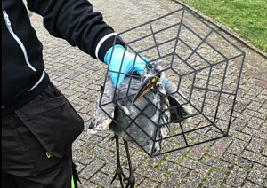
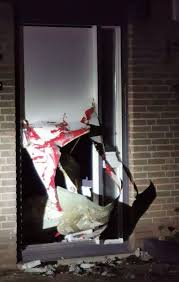
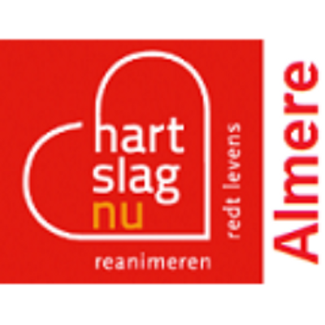

 De reiger die in Almere-Haven en omstreken rondvloog met een hekwerk rond zijn snavel, is door medewerkers van de dierenambulance gered. De ongeluksvogel maakt het goed. Het dier vloog ruim een week met het hekwerk rond in de Flevose stad, maar ondanks dat de vogel daardoor verzwakt was geraakt, wist hij toch elke keer weg te vliegen en zo uit handen van de dierenambulance te blijven. Die had mensen eerder opgeroepen vooral te bellen als ze de reiger zagen rondvliegen. Aan die oproep werd massaal gehoor gegeven. Zondag was het eindelijk raak en wisten ze de vogel te vangen, laat de dierenambulance weten op Facebook. Een makkelijke klus was het niet. “De reiger is van twee kanten benaderd en we hebben hem uiteindelijk met een net kunnen vangen!” Het hekwerk is losgeknipt en gelukkig lijkt de schade aan de ‘gehekdicapte’ vogel mee te vallen. De reiger mag nu aansterken in het Vogelhospitaal in Naarden.
Voordeur opengeblazen
De voordeur van een woning aan de Wipmolenweg in de Almeerse Molenbuurt is in de nacht van zaterdag op zondag opgeblazen met zwaar vuurwerk. Buurtbewoners werden rond 05:30 uur opgeschrikt door twee zware knallen.  Op een foto die wijkagent Knol op Twitter heeft gezet, is een gapend gat te zien in de onderkant van de deur. Het lijkt erop dat het vuurwerk via de brievenbus naar binnen is geduwd. De bewoners wilden geen reactie geven aan Omroep Flevoland. De politie hoopt dat er getuigen zijn die de dader of daders hebben gezien. Ook zijn beelden van bewakingscamera's welkom.
Almere bereid campagne te voeren voor werving burgerhulpverleners
De gemeente Almere is bereid een grote campagne op te zetten met de Hartstichting om meer mensen op te leiden tot burgerhulpverlener. Dat zei wethouder Roelie Bosch donderdagavond tijdens de politieke markt. Aanleiding voor de uitspraak was een motie van de VVD en ChristenUnie om meer inzichtelijk te krijgen waar AED's in de stad hangen om mensen met een hartstilstand te redden. Uit een recente rondgang van de Hartstichting en Omroep Flevoland door het centrum van Almere Stad bleek geen enkele AED buiten te vinden. Uit cijfers van de Hartstichting komt naar voren dat er op 42 plekken in Almere zo'n Automatische Externe Defibrillator mist voor een dekkend netwerk. In de motie riepen de partijen de gemeente op een inventarisatie te maken van de aanwezigheid van AED's die niet zijn aangemeld bij de organisatie HartslagNu en die lijst openbaar te maken. De gedachte daarachter is dat dan iedereen een AED kan halen als dat nodig is. Het blijkt dat bedrijven en sommige particulieren een AED hebben, maar dat deze bij hulpverleners niet bekend zijn.  Wethouder Roelie Bosch vindt het een sympathieke motie, maar wil 'm niet uitvoeren. Volgens haar is een dergelijke actie niet de taak van de gemeente. Bovendien vindt ze die niet eens wenselijk. Als mensen precies weten waar die apparaten hangen, bestaat de kans dat ze worden gestolen.